Долги по изображениям справочника
Срез прода 21.10.2026. Каталог 826 строк: 49 ведут на наш хост, 772 — на апстрим free-exercise-db, 5 без кадра. Ещё семь позиций перерисованы и приняты владельцем, их кадры лежат в data/exercises, но media_url показывает на апстрим: три с 15.10 (12 кадров, коммит 1ee3f12, миграция 20261021120000_repoint_three_accepted_frames.sql собрана и не выложена) и четыре партии 3 от 21.10 (16 кадров, миграции ещё нет). Ссылки не переключены, поэтому в приложении все семь всё ещё выглядят старым кадром. Порядок счётчиков: 49 → 52 после первой миграции, 52 → 56 после второй; на 56 апстримных ссылок станет 765.
По механическому матчингу имени папки с name_eng расходятся 34 строки легаси: класс «кадр про другое движение» и класс «другое имя той же записи», где дефекта нет. Всё, что уже перерисовано и ждёт только переключения ссылки, вынесено в группу «hosted» — в таблице «не совпадают сейчас» этих строк нет. Апстримных папок, занятых двумя строками, — 11; три после перевода осиротели в базе: Band_Hip_Adductions, Seated_Bent-Over_One-Arm_Dumbbell_Triceps_Extension, Triceps_Pushdown_-_V-Bar_Attachment (их файлы на апстриме мы не трогаем).
Отдельно «Мёртвый жук» (47e3f7b4) — урок про метод, а не про картинку: имя папки совпадает с name_eng, поэтому механический счётчик 34 его не содержит. Расхождение видел только глаз: апстримный кадр показывал исходную позу, а не вытяжение разноимённых руки и ноги. Позиция принята 21.10 и ждёт переключения ссылки — с 37 слотами и 51 строкой истории это самый заметный пункт всей очереди.
Каждая карточка показана так, как её рисует приложение: бокс 330×183, object-fit: cover. В группах «todo», «text», «recheck», «keep» большой кадр — что видит пользователь сейчас (чужая апстримная папка); в «closed» и «hosted» — наш кадр, а мелким — чем это было. Занятость считана 21.10: «слоты» — вхождения во все программы (каталожные и личные), «история» — строки workout_exercises; у «Подтягиваний широким хватом» 32 слота раскладываются как 18 каталожных + 14 личных. Цифры двигаются между срезами, потому что личные программы пользователей правятся. «Журавлик» и 37 позиций волны 1 в список не входят: они давно на нашем хосте. Клиент читает только media_url, но кеш держит старый ответ — после смены ссылки нужен свежий прогон.
Не совпадают сейчас · 5
Описание строки и кадр про разные движения. Кадр здесь — тот, что пользователь видит сегодня. Отсортировано по тому, сколько раз позиция показана: слоты в программах плюс строки истории. Вне этой таблицы: закрыто 13–14.10 — 6, перерисовано и ждёт переключения ссылки — 7 (см. «hosted» ниже), совсем без кадра — 5, строки коллизии «две строки на один кадр» — 2. Механический матчинг имени папки с name_eng даёт 34 расходящиеся строки легаси, но 23 из них — класс «другое имя той же записи», где кадр верный; глазами расхождений осталось столько, сколько в таблице.
| кадр | строка | что нарисовано | слоты / история | чем лечится |
|---|
| Подтягивания широким хватом | тяга верхнего блока сидя — а строка про подтягивания на турнике | 32 / 73 | не трогать (твой вердикт 12.10) |
| id e4bcc6ac… · approved · Wide-Grip Pull-Up | апстримная папка: Wide-Grip_Lat_Pulldown |
| Ягодичный мостик на полу | мостик со штангой на бёдрах — строка описывает мостик без снаряда | 4 / 4 | перерисовать (вердикт «текст» не чинит) |
| id 5f214a11… · approved · Butt Lift (Bridge) | апстримная папка: Barbell_Glute_Bridge |
| Пуловер в Смите | жим в Смите вниз головой — это жим, а не пуловер по дуге | 0 / 0 | перерисовать (вердикт «текст» не чинит) |
| id f24044ec… · approved · Smith Machine Pullover | апстримная папка: Decline_Smith_Press |
| Разгибание ног в Смите (с адаптером) | жим ногами лёжа в Смите — разгибания голени сидя там нет | 0 / 0 | перерисовать (вердикт «текст» не чинит) |
| id 9a77e5f5… · needs_review · Smith Machine Leg Extension | апстримная папка: Smith_Machine_Leg_Press |
| Французский жим обратным хватом | разгибание рук на блоке обратным хватом — строка про жим лёжа со штангой | 0 / 0 | перерисовать (вердикт «текст» не чинит) |
| id c557b192… · needs_review · Reverse-Grip Barbell Lying Triceps Extension | апстримная папка: Reverse_Grip_Triceps_Pushdown |
Очередь генерации · что брать следующим
Сортировка по готовности: сначала три позиции, у которых промпты уже написаны (мостик + две из партии 3), потом те, где промпты надо дописать, потом «без кадра». Отдельный шаг, который не зависит от генерации: переключение ссылок у семи принятых кадров из группы «hosted» — миграция на три собрана, на четыре партии 3 пишется, и ни одна не выкладывается без твоего слова. Правило партии остаётся: одна позиция за раз — женская пара, твоё одобрение, мужская пара, затем следующая.
- Ягодичный мостик на полу · id 5f214a11… · слоты 4 / история 4 — промпты уже написаны — последняя позиция прошлой партии; рисовать мостик БЕЗ штанги, папка повторяет name_eng со скобками, URL после пуша проверять отдельным запросом
- Пуловер в Смите · id f24044ec… · слоты 0 / история 0 — промпты написаны 21.10 (build-batch3-prompts.py, четыре файла Smith_Machine_Pullover_*.txt): пуловер в Смите, лёжа поперёк горизонтальной скамьи, гриф в прямых руках, дуга за голову
- Французский жим обратным хватом · id c557b192… · слоты 0 / история 0 — промпты написаны 21.10 (четыре файла Reverse-Grip_Barbell_Lying_Triceps_Extension_*.txt): французский жим лёжа на скамье, EZ-гриф обратным хватом, локти вверх
- Разгибание ног в Смите (с адаптером) · id 9a77e5f5… · слоты 0 / история 0 — промпты с нуля: разгибание голени сидя внутри Смите, адаптер у стоп
- Подтягивания широким хватом со смещением в стороны · id 1208d0bd… · слоты 0 / история 0 — совсем без кадра при approved — пустая карточка выглядит как брак
- Разгибание запястий со штангой · id aa06dcd2… · слоты 0 / история 0 — совсем без кадра, движение тривиальное — одна пара кадров
- Удержание штанги · id f70c9ee3… · слоты 0 / история 0 / Скандинавские сгибания · id 3f168d4a… · слоты 0 / история 0 / Шраги в Смите · id 62adbf83… · слоты 0 / история 0 — сначала завести name_eng (без него нельзя ни папку, ни кадр, ни поиск), потом в очередь на рисунок
- Взятие штанги на грудь с виса в силовом стиле в тренажере Смита · id 902871f2… · слоты 0 / история 0 / Взятие штанги на грудь с виса в тренажере Смита · id fcab6afd… · слоты 0 / история 0 — это не про картинку: коллизия двух строк на один кадр — нужно решение о слиянии, пока генерацию не брать
Закрыто 13–14.10 — кадр на нашем хосте, media_url переключён, показывается в приложении и на вебе · 6
сейчас: наш кадр, обе пары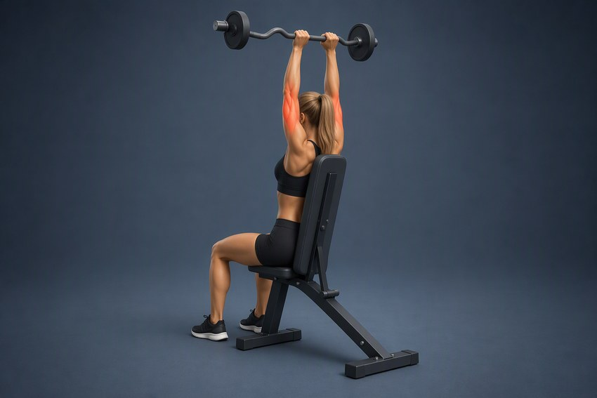
было: Seated_Bent-Over_One-Arm_Dumbbell_Triceps_Extension
Французский жим сидя
Seated Barbell Overhead Triceps Extension · id aefdc8dc… · approved
трицепс (длинная головка) · Скамья со спинкой, EZ-гриф, Гантели · слотов: 16 · строк истории: 40
Сядьте на скамью со спинкой и удерживайте отягощение над головой. Согните локти, опуская вес за голову, сохраняя плечи и корпус стабильными. Разогните локти и верните отягощение в верхнее положение.
- Закрыто 14.10: media_url на свою папку, needs_review поднят до approved (миграция 20261014090000)
- 16 слотов в программах + 40 строк истории — самый горячий долг очереди, снят первым
- Проверить на устройстве: карточка упражнения и карточка дня в программах, где она стоит
сейчас: наш кадр, обе пары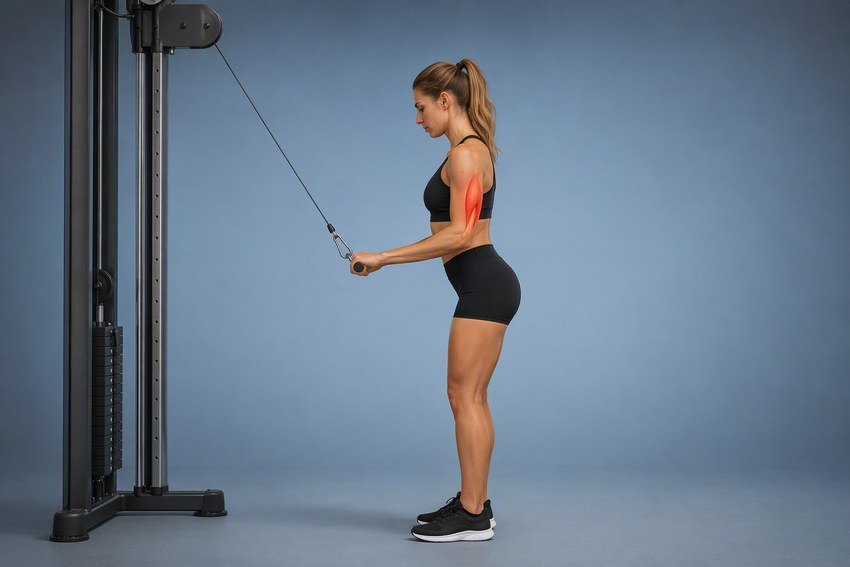
было: Triceps_Pushdown_-_V-Bar_Attachment
Разгибание рук на верхнем блоке (прямая рукоять)
Triceps Pushdown - Straight Bar · id bb1fbbb4… · approved
трицепс · Верхний Блок, Прямая Рукоять, V-Образная Рукоять · слотов: 12 · строк истории: 22
Встаньте лицом к верхнему блоку и возьмитесь за прямую рукоять. Прижмите локти к корпусу и удерживайте плечи неподвижными. Разогните руки вниз до контролируемого положения.
- Закрыто 14.10: чистый профиль, обе кисти, трос по центру планки — принято после четырёх браков и варианта C
- Занятость выросла с 12.10: было 0 / 19, стало 4 каталожных слота и 20 строк истории
- V-Образная Рукоять осталась в снаряжении строки (твой вердикт 12.10) — кадр с прямой планкой не противоречит
сейчас: наш кадр, обе пары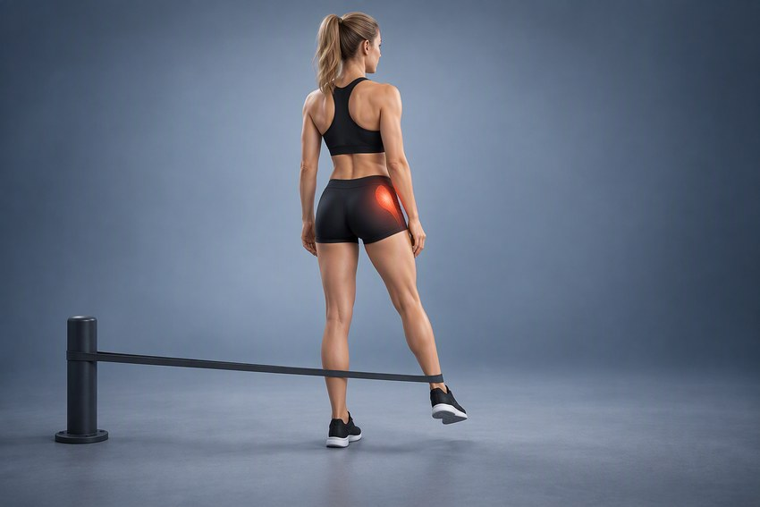
было: Band_Hip_Adductions
Отведение ноги в сторону с резинкой
Band Hip Abduction · id 437b6328… · approved
средняя ягодичная · Фитнес-резинки · слотов: 6 · строк истории: 0
Закрепите фитнес-резинку за устойчивую опору на уровне лодыжки. Встаньте боком к опоре и наденьте петлю на лодыжку дальней ноги. Отведите рабочую ногу в сторону.
- Закрыто 14.10: женская пара принята 12.10, мужская дорисована 13.10, ссылка переключена 14.10
- Старая апстримная папка Band_Hip_Adductions теперь не нужна никому: 0 ссылок в базе (хозяина «приседание с резинкой» в каталоге не было). Её файлы на апстриме мы не трогаем, локальное зеркало можно снять
сейчас: наш кадр, обе пары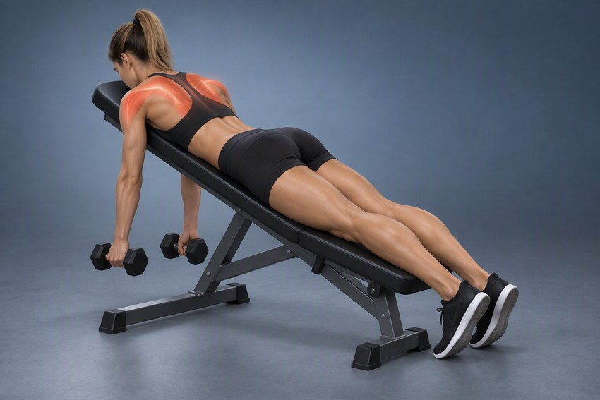
было: Alternating_Cable_Shoulder_Press
Подъёмы Y-T-W-L на наклонной скамье
Incline Y-T-W-L Raise · id 8839d193… · approved
задняя дельта, средняя/нижняя трапеция, ротаторная манжета · Наклонная Скамья, Гантели · слотов: 0 · строк истории: 0
Лягте животом на наклонную скамью и возьмите лёгкие гантели. Последовательно выполняйте подъёмы рук в положениях Y, T, W и L.
- Закрыто 14.10: нарисовано положение W, чтобы не дублировать готовые «Y-подъём» и «T-подъём в наклоне»
- needs_review поднят до approved той же миграцией
- Хвост не закрыт: в тексте перечислены Y/T/W/L, а кадр показывает только W — по варианту надо сузить описание или завести отдельные строки под Y/T/L
сейчас: наш кадр, обе пары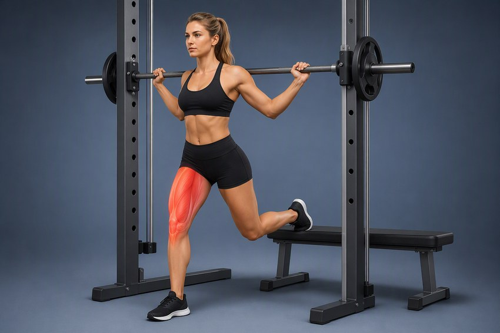
было: Smith_Machine_Pistol_Squat
Болгарские выпады в Смите
Smith Machine Bulgarian Split Squat · id 1d20086e… · approved
квадрицепс · Тренажер Смита, Скамья · слотов: 0 · строк истории: 30
Разместите заднюю ногу на скамье, переднюю поставьте достаточно далеко. Штангу Смита на верх спины, опуститесь на передней ноге.
- Закрыто 14.10: 0 каталожных слотов, но 30 строк истории — позиция видна в журнале тренировок
- Старая папка Smith_Machine_Pistol_Squat осталась у «пистолетика», отнято ничего не было
- Финишный кадр чуть крупнее стартового (подъезд камеры) — принято в женской паре, мужская повторяет
сейчас: наш кадр, обе пары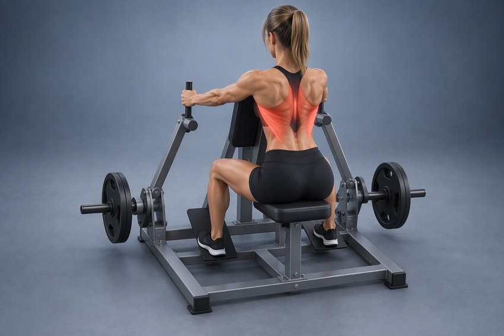
было: Machine_Shoulder_Military_Press
Тяга в тренажере (Row)
Machine Row · id 7a3ccbdf… · approved
широчайшие · Тренажер Для Тяги · слотов: 4 · строк истории: 4
Сядьте в тренажер, прижмите грудь к опорной подушке, потяните рукояти к корпусу, сводя лопатки.
- Закрыто 14.10: копия тренажёра с твоего референса — рычажная рама, грудная подушка, две вертикальные рукояти, по блину с каждой стороны, нейтральный хват
- До генерации рама была описана как «широкий гриф с блинами на концах» — это дало четыре брака подряд; сработало описание по узлам от ближнего к дальнему
- Асимметрия блинов правилась замером центроида тёмных пикселей по сторонам, а не глазом: финиш 0.46/0.38 → 0.29/0.31
- Machine_Shoulder_Military_Press остаётся у строки «Жим в тренажере Shoulder Press» — её собственный кадр
Кадры приняты и лежат в data/exercises — остался один шаг: переключить media_url (для 15.10 миграция собрана, для партии 3 ещё нет) · 7
наш кадр принят · ссылка ещё апстримная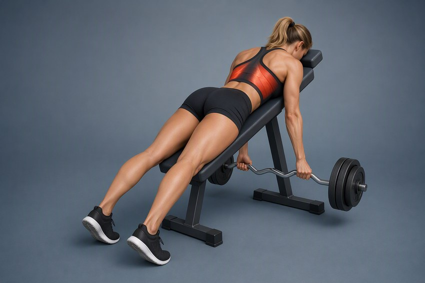
было: Bent_Over_Barbell_Row
Тяга Рынделя
Rendl Barbell Row · id 216243c9… · approved
широчайшие · Штанга, Гантели, Скамья · слотов: 0 · строк истории: 0
Лягте грудью и головой на устойчивую скамью, удерживая вес в руках. Потяните вес к поясу, сводя лопатки.
- Кадры приняты владельцем 15.10, лежат на нашем хосте (коммит 1ee3f12, четыре URL отдают 200)
- Осталась миграция: media_url строки всё ещё смотрит на Bent_Over_Barbell_Row, поэтому в приложении и на вебе пока виден старый кадр
- Спорный кусок — амплитуда: принят вариант «в» (короткая амплитуда, гриф не доходит до корпуса) после того, как на финишном кадре гриф проходил сквозь лавку
- После переключения ссылки апстримная папка Bent_Over_Barbell_Row осиротеет: у «Тяги штанги в наклоне» свой кадр на нашем хосте, этой строке она больше не нужна
- Миграция собрана:
supabase/migrations/20261021120000_repoint_three_accepted_frames.sql — реверс построчный, счётчики 49 → 52 и 772 → 769; не выложена до слова «выкладывай»
наш кадр принят · ссылка ещё апстримная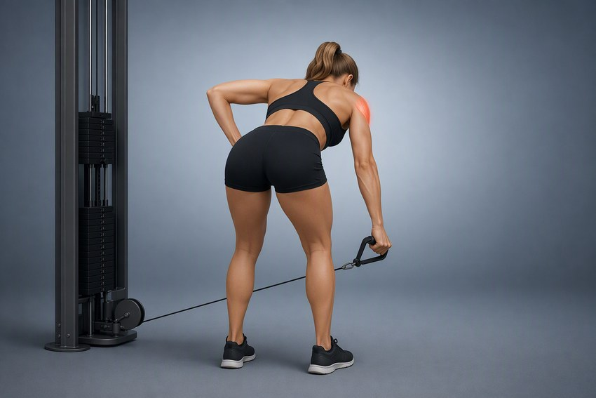
было: Bent_Over_One-Arm_Long_Bar_Row
Махи в кроссовере одной рукой с наклоном (задняя дельта)
Bent-Over One-Arm Cable Rear Delt Raise · id 026fe9a4… · approved
задняя дельта · Кроссовер, D-Образная Рукоять · слотов: 0 · строк истории: 0
Встаньте боком к нижнему блоку, наклоните корпус до параллели с полом, поднимите дальнюю руку через сторону.
- Кадры приняты владельцем 15.10, лежат на нашем хосте (коммит 1ee3f12, четыре URL отдают 200)
- Осталась миграция: media_url строки всё ещё смотрит на Bent_Over_One-Arm_Long_Bar_Row
- Первый кадр был брак по расположению человека — правился до «корпусом лицом к нам, тяга дальней от блока рукой»; квадратность таза и свободная рука закреплены в промпте отдельными блоками
- Папка Bent_Over_One-Arm_Long_Bar_Row после переключения осиротеет: хозяина в каталоге нет
- Миграция собрана:
supabase/migrations/20261021120000_repoint_three_accepted_frames.sql — реверс построчный, счётчики 49 → 52 и 772 → 769; не выложена до слова «выкладывай»
наш кадр принят · ссылка ещё апстримная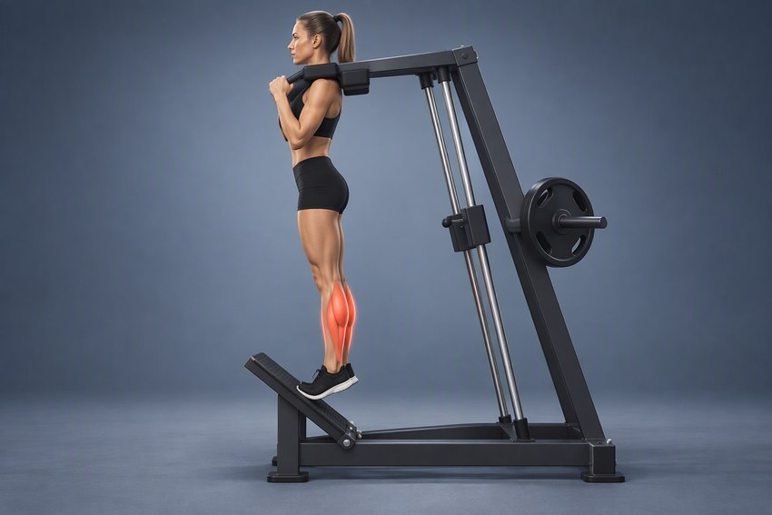
было: Narrow_Stance_Hack_Squats
Подъем на носки в гакк-тренажере
Hack Squat Machine Calf Raise · id a8a977d2… · approved
икроножная · Гакк-Тренажер · слотов: 0 · строк истории: 0
Плечи под подушками, передняя часть стоп на краю платформы, поднимитесь на носки.
- Кадры приняты владельцем 15.10, лежат на нашем хосте (коммит 1ee3f12, четыре URL отдают 200)
- Осталась миграция: media_url строки всё ещё смотрит на Narrow_Stance_Hack_Squats
- Пятка не опускалась ниже платформы — лечилось не «опусти пятку», а SHOE OVERHANG: на доске только передняя половина кроссовка
- Папка Narrow_Stance_Hack_Squats после переключения осиротеет: хозяина в каталоге нет
- Миграция собрана:
supabase/migrations/20261021120000_repoint_three_accepted_frames.sql — реверс построчный, счётчики 49 → 52 и 772 → 769; не выложена до слова «выкладывай»
наш кадр принят · ссылка ещё апстримная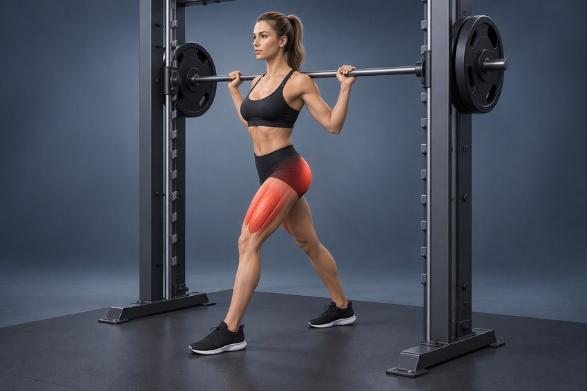
было: Smith_Machine_Squat
Выпады в Смите
Smith Machine Lunge · id cb22b47b… · approved
квадрицепс, большая ягодичная · Тренажер Смита · слотов: 0 · строк истории: 0
Гриф на плечах, шаг вперёд, опустите таз, оттолкнитесь передней ногой.
- Принято владельцем 21.10 и разложено в data/exercises (00f/01f/00m/01m)
- Осталась миграция: media_url строки всё ещё смотрит на Smith_Machine_Squat
- Дискриминатор против приседа удержали: ноги врозь (шаг вперёд), колено задней ноги уходит вниз
- Финиш женский взят v2, мужской старт — v3: первые прогоны давали силовую раму вместо Смите, лечилось APPARATUS-MACHINE LOCK с размерами зубьев («мелкие tooth-shaped notch ~4 см»), а тонущий таз в старте — KNEES STRAIGHT LOCK
- Подсветка по вердикту 14.10 закрывает квадрицепс и ягодичную: обе лежат в primary_muscles
- Папка Smith_Machine_Squat остаётся у «Приседаний в Смите» — её держат две ссылки, осиротевшей не будет
- Миграции на переключение этой ссылки ещё нет: она ложится вторым файлом после
20261021120000 (счётчики 52 → 56 и 769 → 765). Кадры уезжают на хост этим пушем, но до слова «выкладывай» в приложении виден старый апстримный кадр
наш кадр принят · ссылка ещё апстримная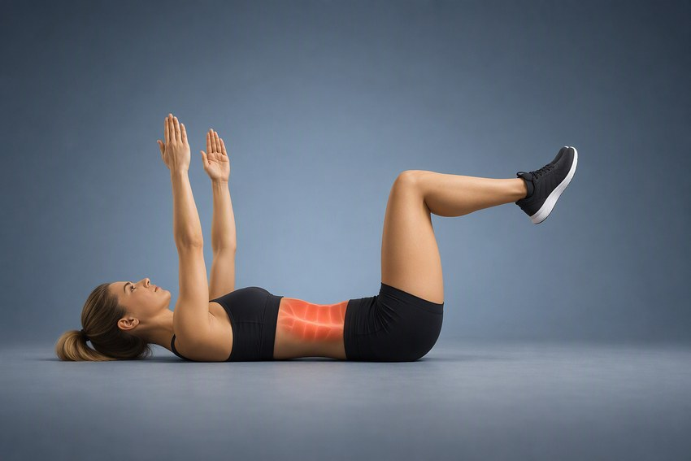
было: Dead_Bug
Мёртвый жук
Dead Bug · id 47e3f7b4… · approved
прямая мышца живота · Пол, Коврик · слотов: 37 · строк истории: 51
Лягте на спину и поднимите руки и согнутые ноги примерно под прямым углом. Медленно опустите противоположные руку и ногу к полу, удерживая поясницу прижатой. Верните их в исходное положение и повторите движение другой парой конечностей. Дышите спокойно, особенно контролируя выдох при разгибании конечностей.
- Принято владельцем 21.10 и разложено в data/exercises (женский старт + финиш v3, мужская пара)
- Осталась миграция: media_url уже смотрит на папку Dead_Bug, но на апстримную копию (0.jpg), а не на наши 00f/01f — путь тот же, поэтому переключение выглядит одной строкой
- САМЫЙ ЗАНЯТЫЙ ПУНКТ ОЧЕРЕДИ: 37 слотов во все программы (17 каталожных) и 51 строка истории — после переключения ссылки кадр увидят все, кто это движение уже делает
- Два брака подряд лечились блоками: одноимённая рука в финише → ARM ASSIGNMENT LOCK, прогиб поясницы → LUMBAR CONTACT LOCK (прогиб поймал владелец глазами, ни один замер его не видит)
- В папке лежат легаси 0.jpg/1.jpg — до переключения ссылки это и есть то, что читает приложение, не удалять
- Миграции на переключение этой ссылки ещё нет: она ложится вторым файлом после
20261021120000 (счётчики 52 → 56 и 769 → 765). Кадры уезжают на хост этим пушем, но до слова «выкладывай» в приложении виден старый апстримный кадр
наш кадр принят · ссылка ещё апстримная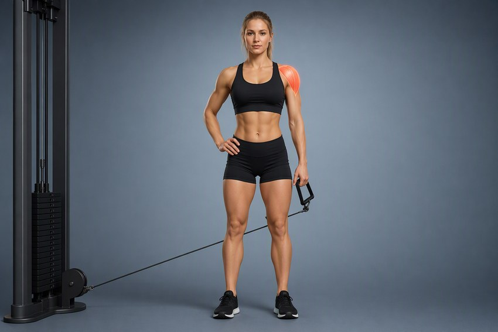
было: Cable_Seated_Lateral_Raise
Махи в кроссовере на среднюю дельту
Cable Lateral Raise · id 4e36cf74… · approved
средняя дельта · Нижний Блок, D-Образная Рукоять · слотов: 2 · строк истории: 3
Встаньте боком к нижнему блоку и возьмитесь за рукоять дальней рукой. Отведите руку через сторону до уровня плеч.
- Принято владельцем 21.10 (женская пара v2 + мужская) и разложено в data/exercises
- Осталась миграция: media_url строки смотрит на апстримный Cable_Seated_Lateral_Raise
- Класс «переписать текст» закрыт перерисовкой: кадр подогнан под текущий текст стоя, формулировку «встаньте боком к блоку» не трогали
- Первые прогоны давали сидячий вариант и не ту руку — лечилось числами в FRAMING (макушка 4 %, подошвы 93 %) и явным назначением руки
- 2 слота и 3 строки истории: после переключения ссылки кадр виден в журнале
- Папка Cable_Seated_Lateral_Raise после переключения осиротеет: ссылок на неё в каталоге больше не будет
- Миграции на переключение этой ссылки ещё нет: она ложится вторым файлом после
20261021120000 (счётчики 52 → 56 и 769 → 765). Кадры уезжают на хост этим пушем, но до слова «выкладывай» в приложении виден старый апстримный кадр
наш кадр принят · ссылка ещё апстримная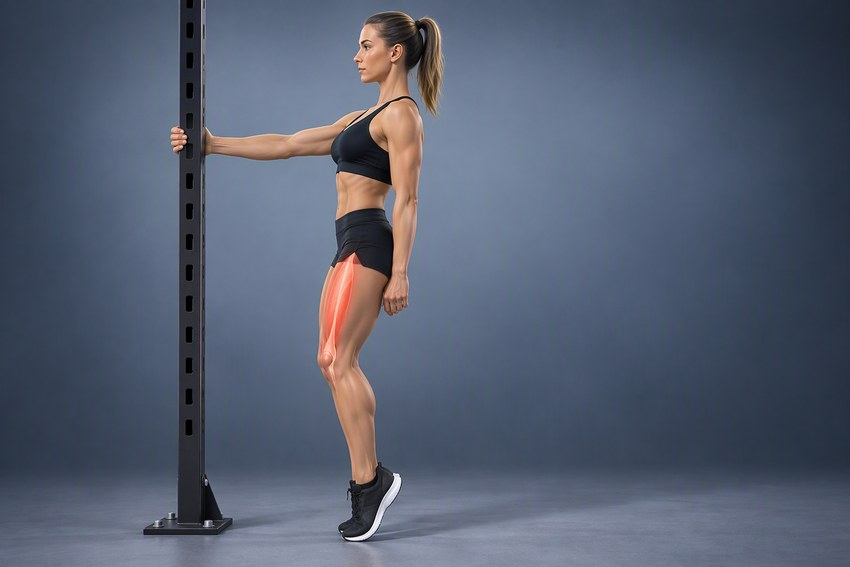
было: Weighted_Sissy_Squat
Сисси-приседания
Bodyweight Sissy Squat · id 10a3fed1… · approved
прямая мышца бедра · Опора, Тренажер Sissy Squat · слотов: 0 · строк истории: 0
Возьмитесь за опору, отклоните корпус назад и согните колени, выводя их за стопы.
- Принято владельцем 21.10 и разложено в data/exercises: женская пара (старт + финиш v2), мужская — старт v2 + финиш v2 (взял нижний ряд из двух прогонов по толщине опоры)
- Осталась миграция: media_url строки смотрит на апстримный Weighted_Sissy_Squat
- Класс «переписать текст» закрыт перерисовкой: кадр сделан без снаряда, поэтому «с отягощением» в текст добавлять не надо, а LOAD LOCK в промпте держит разницу со строкой «Сисси-приседания с отягощением»
- Держится HEELS-UP LOCK: пятки подняты в обоих кадрах, иначе уезжает в обычный присед
- Толщина опоры скачет от прогона к прогону (73 / 202 / 259 пикселей при одном тексте) — число в процентах кадра её не удерживает, пару принимали по фигуре
- 0 слотов, снаряд Weighted_Sissy_Squat остаётся у «Сисси-приседаний с отягощением»
- Миграции на переключение этой ссылки ещё нет: она ложится вторым файлом после
20261021120000 (счётчики 52 → 56 и 769 → 765). Кадры уезжают на хост этим пушем, но до слова «выкладывай» в приложении виден старый апстримный кадр
Твой вердикт 12.10 «переписать текст», но кадр про другое движение — текст не поможет · 4
сейчас: чужая папка
Ягодичный мостик на полу
Butt Lift (Bridge) · id 5f214a11… · approved
большая ягодичная · Пол, Коврик · слотов: 4 · строк истории: 4
Лягте на спину, согните колени, стопы на ширине таза. Поднимите таз вверх за счёт разгибания бедер.
- ВЕРДИКТ ПОД ВОПРОСОМ: «переписать текст» не чинит её — на кадре штанга, а строка описывает мостик без снаряда
- Снаряд разный → по нашему же правилу это новая позиция, а не алиас: остаётся перерисовать кадр без штанги
- Переименование или слияние со «Ягодичным мостиком со штангой на полу» запрещено правилом не переименовывать строки
- Промпты уже написаны (последняя позиция партии из пяти); папка повторяет name_eng дословно, со скобками — после пуша её URL надо проверить отдельным запросом, а не по шаблону
- Занятость выросла с 12.10: было 0 / 0, стало 4 слота и 4 строки истории — текст уже читают в журнале
сейчас: чужая папка
Пуловер в Смите
Smith Machine Pullover · id f24044ec… · approved
широчайшие · Тренажер Смита, Скамья · слотов: 0 · строк истории: 0
Лягте на скамью под грифом, снимите гриф, по дуге опустите за голову и верните над грудь.
- ВЕРДИКТ ПОД ВОПРОСОМ: кадр — жим вниз головой, это другое движение, текст тут не при чём
- Перерисовать: пуловер в Смите, лёжа поперёк горизонтальной скамьи, гриф в прямых руках, дуга за голову
- 0 слотов
сейчас: чужая папка
Разгибание ног в Смите (с адаптером)
Smith Machine Leg Extension · id 9a77e5f5… · needs_review
квадрицепс · Адаптер, Тренажер Смита, Скамья · слотов: 0 · строк истории: 0
Сядьте на скамью в Смите, адаптер передаёт сопротивление на стопы, разогните ноги в коленях.
- ВЕРДИКТ ПОД ВОПРОСОМ: кадр — жим ногами, не разгибание
- Перерисовать: сидя на скамье внутри Смите, адаптер у стоп, разгибание голени
- needs_review + 0 слотов — можно править свободно
сейчас: чужая папка
Французский жим обратным хватом
Reverse-Grip Barbell Lying Triceps Extension · id c557b192… · needs_review
трицепс (медиальная головка) · EZ-гриф, Гантели, Скамья · слотов: 0 · строк истории: 0
Лягте на скамью, возьмите отягощение обратным хватом, руки над грудью, сгибайте локти.
- ВЕРДИКТ ПОД ВОПРОСОМ: кадр — разгибание на блоке обратным хватом, снаряд другой (блок вместо лёжа со штангой)
- Перерисовать: лёжа на скамье, EZ-гриф обратным хватом, локти вверх
- Папка Reverse_Grip_Triceps_Pushdown остаётся у строки «Разгибание рук в кроссовере обратным хватом»
Оставлено как есть по твоему вердикту · 1
сейчас: чужая папка
Подтягивания широким хватом
Wide-Grip Pull-Up · id e4bcc6ac… · approved
широчайшие · Турник · слотов: 32 · строк истории: 73
Повисните на турнике широким хватом, подтяните корпус грудью к перекладине.
- Не трогать (твой вердикт 12.10): широкий хват закрыт строкой «Подтягивания за голову широким хватом», а «Подтягивания» — хват чуть шире плеч, там свой кадр
- 32 слота и 73 строки истории — самое занятое место в этом реестре, трогать только по явной причине
Вообще без изображения · 5
без кадра
Подтягивания широким хватом со смещением в стороны
Side To Side Chins · id 1208d0bd… · approved
широчайшие · Турник · слотов: 0 · строк истории: 0
Подтянитесь, смещая корпус к одной руке, опуститесь, следующее повторение к другой.
- Нарисовать: 0 слотов, но строка approved и видна в справочнике — пустая карточка выглядит как брак
- Или убрать из каталога, если движение дублирует «Подтягивания широким хватом»
без кадра
Разгибание запястий со штангой
Barbell Wrist Extension · id aa06dcd2… · approved
разгибатели предплечья · Штанга, Скамья · слотов: 0 · строк истории: 0
Сядьте, предплечья на бёдрах, кисти свисают с края, разогните запястья.
- Нарисовать — движение простое, одна пара кадров
- Или оставить без кадра: в приложении карточка будет без иллюстрации
без кадра
Удержание штанги
— · id f70c9ee3… · approved
мышцы предплечья · Штанга · слотов: 0 · строк истории: 0
Встаньте со штангой на прямых руках, удерживайте гриф, не поднимая плечи.
- Сначала завести name_eng (например Barbell Hold) — без него нельзя ни папку, ни поиск
- Потом нарисовать статичную стойку с грифом в руках
- Либо снять из каталога: изометрика, дублирует «Прогулку фермера» по смыслу
без кадра
Скандинавские сгибания
— · id 3f168d4a… · needs_review
бицепс бедра · Тренажер Nordic, Партнер, Коврик · слотов: 0 · строк истории: 0
Встаньте на колени, зафиксируйте стопы, наклоняйте корпус вперёд, сопротивляясь сгибанию коленей.
- name_eng NULL → сначала имя (Nordic Hamstring Curl), потом кадр
- Популярное движение, стоит нарисовать: 0 слотов сейчас, но его часто добавляют в программы
без кадра
Шраги в Смите
— · id 62adbf83… · needs_review
верхняя трапеция · Тренажер Смита · слотов: 0 · строк истории: 0
Встаньте перед грифом, поднимите плечи вверх, пауза, опустите.
- name_eng NULL → сначала имя (Smith Machine Shrugs), потом кадр
- Движение тривиальное — одна пара кадров
Две строки на один кадр — коллизия на твоё решение · 2
сейчас: чужая папка
Взятие штанги на грудь с виса в силовом стиле в тренажере Смита
Smith Machine Hang Power Clean · id 902871f2… · approved
бицепс бедра · Тренажер Смита · слотов: 0 · строк истории: 0
Гриф на уровне бедер, отведите таз назад, мощно разогните бёдра и колени, подсядьте и примите штангу на плечи.
- Слить в одну строку: обе approved, у обеих 0 слотов, name_eng совпадает дословно — дедуп 09.10 их не поймал
- Или оставить две и нарисовать второй кадр (тогда различие должно быть в name, не только в технике)
- Третий вариант — переименовать — запрещён: name_eng участвует в поиске справочника
сейчас: чужая папка Взятие штанги на грудь с виса в тренажере Смита
Smith Machine Hang Power Clean · id fcab6afd… · approved
бицепс бедра · Тренажер Смита · слотов: 0 · строк истории: 0
Удерживайте гриф в положении виса, отведите таз назад, разогните бёдра и колени, примите гриф на плечи.
- Это вторая из пары-дубля — решение по ней принимается вместе с «в силовом стиле»
- primary_muscles у обеих «бицепс бедра» — по движению это больше про квадрицепс/ягодицы и спину, стоит поправить при слиянии